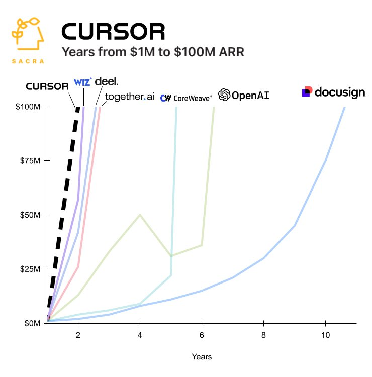
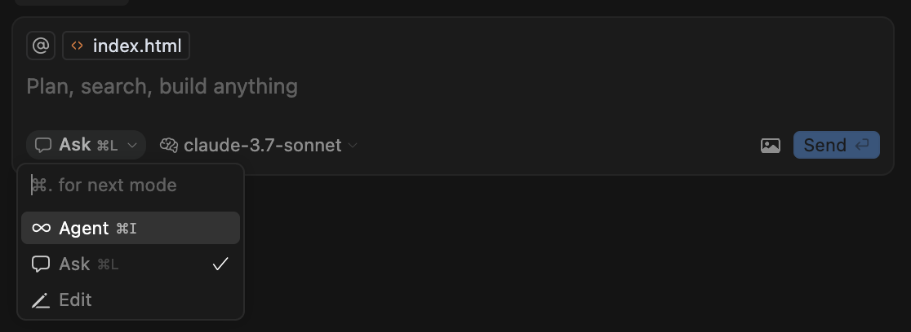
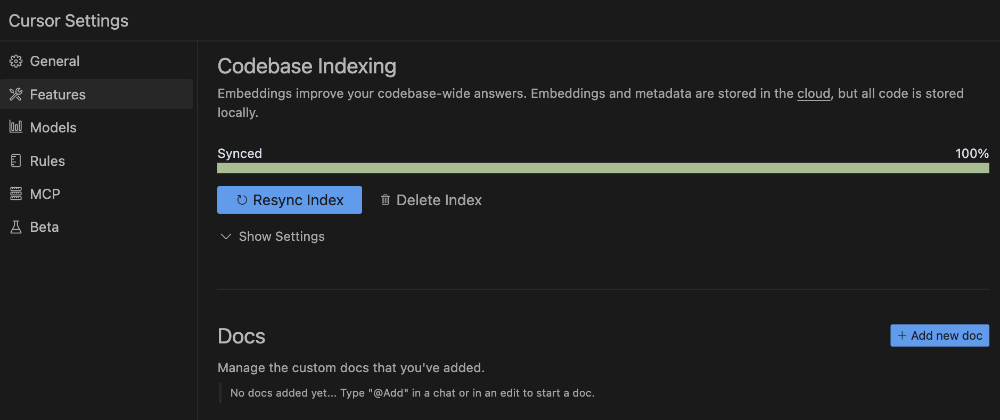

101 Cursor AI
The AI Code Editor
Learning to use in Java Enterprise projects
Who I am
|
|
Juan Antonio Breña Moral Technical Product Owner for Shared Platform @ Atradius CIO Twitter | Github | Linkedin |
|
Quotes: "Lead me, follow me, or get out of my way." "Pressure makes diamonds." - George S. Patton Jr. |
|
Agenda
- Who I am
- Introduction
- Reviewing the IDE
- Use cases
- Limitations & Concerns
- Q&A
Introduction
Java was released on May 23, 1995, as an alpha available only on Sun Microsystem's Solaris operating system.
During this time, Java software engineers implemented Java enterprise solutions by hand with their favorite IDE...
IBM Visual Age for Java

Eclipse
IntelliJ IDEA
VSCode
In the last years, you could observe some signs of change in the Way of working of the Software Engineers...
 Source: https://blog.pragmaticengineer.com/are-llms-making-stackoverflow-irrelevant/
Source: https://blog.pragmaticengineer.com/are-llms-making-stackoverflow-irrelevant/
In the another hand, Cursor is one of the Tech product which get investment with less time in the market.
 Source: https://x.com/kubotamas/status/1887007803275141436But... in this new niche, Cursor is not alone, exist other similar tools like:
 Source: https://www.infoq.com/articles/ai-trends-disrupting-software-teams/
Source: https://www.infoq.com/articles/ai-trends-disrupting-software-teams/
This talk delves into effective strategies for managing challenges and maximizing benefits when integrating AI tools into Java Enterprise projects.
Reviewing the IDE
- Modes (Edit, Ask, Agent)
- Settings
- Cursor rules
- MCP integration
- Pricing
Modes
Ask Mode
- Ask questions about specific code sections
- Get explanations of complex functions
- Find code patterns and examples
- Discover and understand your codebase
Edit Mode
- Make single-turn edits to your code
- Apply targeted changes with precision
- Review and apply changes with confidence
- Work with files individually
Agent Mode
- Make codebase-wide changes and refactoring
- Implement new features from requirements
- Debug complex issues across multiple files
- Generate tests and documentation
- Maintain consistency across your entire project
Settings

Settings

Settings
Models

Use cases
 Source: https://datarob.com/essentials-software-development-life-cycle/
Source: https://datarob.com/essentials-software-development-life-cycle/

Use cases
Source: https://datarob.com/essentials-software-development-life-cycle/

- Prototyping & MVPs
- Complex analysis
- Business code Refactoring
- Testing refactoring
- Documentation
- [ ] Create a new maven project
- [ ] Create a new Spring Boot project with REST support
- [ ] Create a new Quarkus project with REST support
Prompt: Create a new maven project
Prompt: Create a new maven project with Java 24 support
Prompt: Create a new maven project with java.version Java 24
- [x] Create a new maven project
- [ ] Create a new Spring Boot project with REST support
- [ ] Create a new Quarkus project with REST support
Prompt: Create a new Spring boot project with REST support
Prompt: Create a new Spring boot project with REST support with maven support
- [x] Create a new maven project
- [x] Create a new Spring Boot project with REST support
- [ ] Create a new Quarkus project with REST support
Prompt: Create a new Quarkus project with REST support
Prompt: Create a new Quarkus project with REST support with maven support
- [x] Create a new maven project
- [x] Create a new Spring Boot project with REST support
- [x] Create a new Quarkus project with REST support
...

Prompt: Create a Spring boot project using the C4 Diagram and the UML Sequence Diagram
Prompt: Create a Spring boot project using the C4 Diagram and the UML Sequence Diagram with maven support, only using servlet approach and data access with Spring Data JDBC with Java 24

Help the model to improve the efficiency of the Agent workflow.
Limitations & Concerns
🙏 🙏 🙏
Thanks